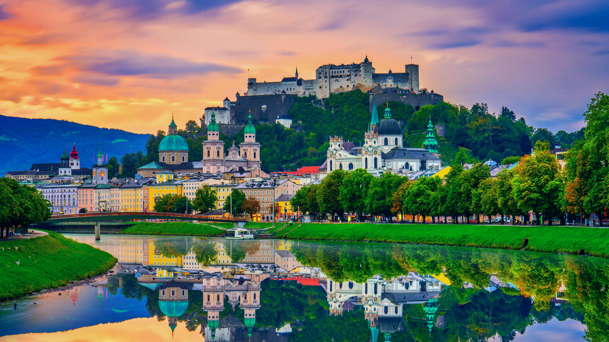
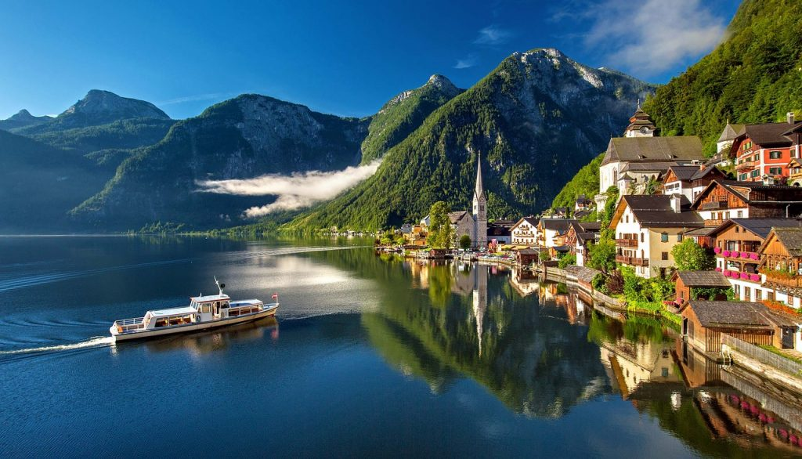
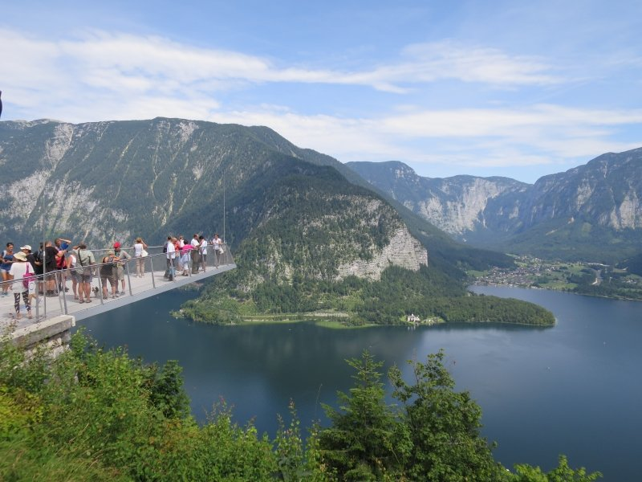

| Salzburg |
Az 1077-ben Gebhard érsek által építtetett erődítmény nagyban meghatározta Salzburg városképét.
A későbbi uralkodók, Gebhard utódai tovább bővítették, fejlesztették. Mai külsejét 1500 körül, Leonhard von Keutschach idején nyerte el.
Az erődítményt eredetileg azért emelték, hogy megvédje a fejedelemséget és az érsekeket az ellenséges támadásoktól.
Ezt a funkciót kiválóan be is töltötte, az évszázadok során egyetlen ostromlójának sem sikerült bevennie.: |
 |
A vár egész évben látogatható. 1892 óta nemcsak gyalog, hanem a Festungsgasseról induló siklóval is kényelmesen megközelíthető.
További fénypont: minden vasárnap 11:45-kor fúvószene hangzik fel a vár trombitatornyából. A barokk fanfárok és ünnepi indulók hangja ilyenkor az egész salzburgi óvárost belengi. A több mint 900 éves vár ezenkívül a híres Salburgi Várkoncertek helyszíne is. |
 |
| Hallstatt |
Hallstatt osztrák mezőváros Felső-Ausztria Gmundeni járásában. 2018 januárjában 778 lakosa volt.
A település a Hallstatti-tó partján fekszik. Róla nevezték el a vaskori prekelta hallstatti kultúrát, amely már kiaknázta a közeli hegyen található sóbányát. |
 |
| Hallstatt több ezer éves múlttal büszkélkedik, már i. e. 2500-ban is éltek itt emberek, akiket a sóban gazdag lelőhelyek vonzottak letelepedésre. A só az egész környék arculatát és történetét meghatározza, már a bronzkor óta jelentős kitermelés folyt itt, és a források napjainkig sem apadtak el. A kelták idejében különösen híres ez a sóban gazdag vidék (’hall’ keltául sót jelent), a vaskor egy részét, az i.e. 850-500 közötti időszakot hallstatti kultúrának is hívják, a környéken egy 2000 sírt magában foglaló kora vaskori temetkezési helyet is feltártak |
 |
| Források |
| https://www.salzburg.info/hu |
| https://www.salzburg.info/hu/sights/top10/hohensalzburg-vara |
| https://hu.wikipedia.org/wiki/Hallstatt |
| https://kirandulastippek.hu/salzkammergut/hallstatt-salzwelten-sobanya |